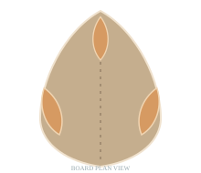
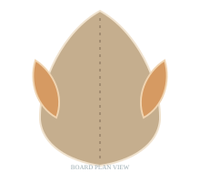
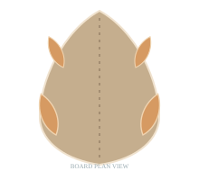
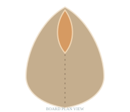

PASO 01 / TIPO DE QUILLA
¿Con qué
surfeas?
Elige el tipo de quilla con el que quieres empezar. Después podrás ajustar libremente la forma, el perfil y la geometría.

01
Quilla lateral · Thruster
Quilla lateral asimétrica como punto de partida para tu setup thruster.
Elegir setup ↗
02
Keel · Twin
Quilla lateral más ancha y plana para tablas twin fin clásicas.
Elegir setup ↗
03
Quad · Quilla lateral
Quilla lateral como base para las quillas delanteras o traseras del quad.
Elegir setup ↗
04
Monoquilla
Una única quilla central. Siempre con US Box.
Diseñar quilla central ↗